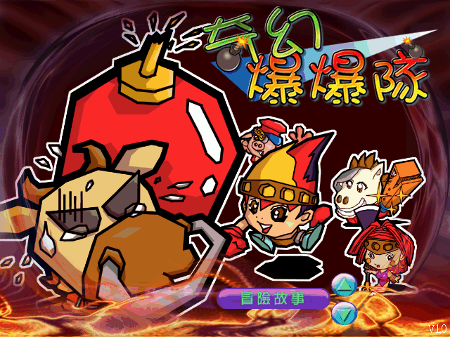
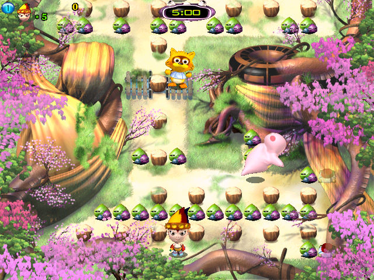

名稱：奇幻爆爆隊 (中文版) 簡介：三協2002年出品的動作遊戲，由協和代理發行 [待補]。   保護：光碟，破解碼： Bomb.exe 75 16 8D 4C 90 90 -- -- 74 0D 80 7C EB -- -- -- 備註：遊戲需要DirectX 8.1以上。 操作：遊戲不支援滑鼠，請使用鍵盤操控。 上下左右 = 移動 右Ctrl = 確認／放炸彈（與VirtualBox內定鍵衝突，請特別注意）

